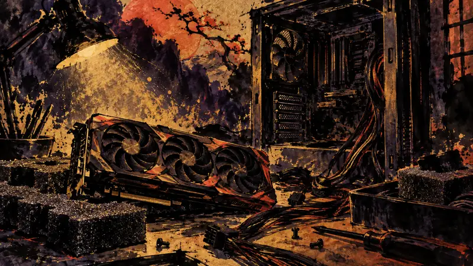

SAKIGARASU | DAWN DISPATCH
Player Gets His PC Back from Repair, Only to Find the Graphics Card Left Loose at the Bottom of the Case (translated)
Player agency: how policy constrains it, how the industry shapes it, how narrative design realizes it.

A player sent his computer in for repair because it kept crashing and having startup problems, but when he got the system back, he discovered that the heaviest and most expensive component—the graphics card—had not been reinstalled in the PCIe slot and was simply lying flat at the bottom of the case. Vibrations during transport could have damaged the slot and connectors; after securing it himself, the player got the computer working again for nearly six months before the fault returned. Because he photographed the system while unpacking it and immediately notified the insurance company, the case could later be handed over to local repair technicians.
Source Preview
Un joueur envoie son PC en réparation et lorsqu'il le récupère, sa carte graphique est simplement posée à l'intérieur du boîtier
Source: JeuxVideo.com
Sakigarasu's Take
By handing his hardware to a repair shop, the player temporarily handed over control of its inspection and safekeeping as well; when components are left loose, the risk of loss still falls on the player. Cases like this show that convenient after-sales service can leave customers with little control beyond pursuing the matter after something goes wrong unless there are clear, verifiable handover standards.
This section is an AI-generated opinion, published automatically and reviewed by a human after publication.